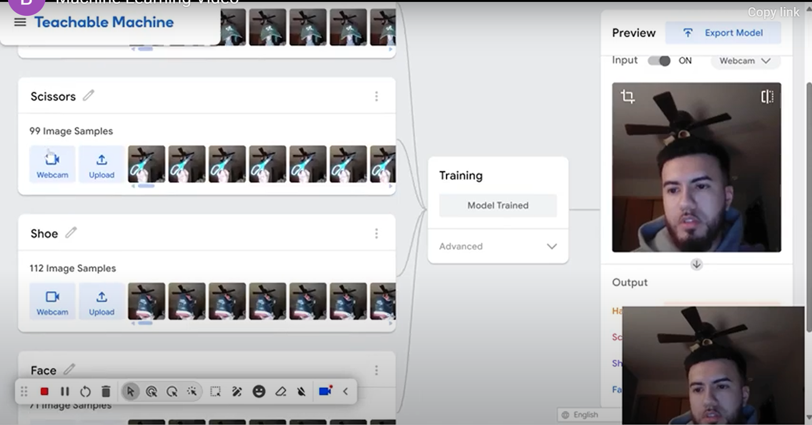

Project Objective
My project is centered on leveraging machine learning to create an image recognition model. Specifically, I set out to develop a teachable machine that can classify images into distinct categories while addressing the ethical and societal challenges that AI often presents. The objective is not just to build a functional system but to reflect deeply on how biases in training data can influence the outcomes of AI models and to ensure that my work aligns with principles of fairness and inclusivity.
Additionally, I wanted to explore how user-friendly machine learning tools, like Google’s Teachable Machine, democratize access to AI development. By engaging with this platform, I aimed to understand how such tools can empower individuals to experiment with machine learning concepts without requiring extensive coding expertise.
Project Scope
The scope of my project extended beyond traditional objects, as I aimed to explore how a machine learning model would handle a diverse and unconventional dataset. I selected everyday items such as a hat, a pair of scissors, and a shoe, as well as images of my face, to evaluate the model’s ability to differentiate between varied shapes, textures, and features.
These objects were chosen intentionally to challenge the model: the hat for its soft, flexible structure; the scissors for their sharp, metallic appearance; the shoe for its irregular and detailed texture; and my face for its organic and dynamic nature. Each item introduced a unique classification challenge, from reflective surfaces to human features, requiring the model to learn subtle distinctions.
Training the model involved capturing multiple angles, lighting conditions, and variations of these items. For example, I took photos of the scissors open and closed, the hat folded and flat, and the shoe from both the top and the sole. Incorporating my face added complexity as I tested whether the model could generalize across expressions and slight movements.
The result was a machine learning model capable of accurately recognizing these objects and features, demonstrating its ability to process a variety of inputs in real-world scenarios. This unconventional approach also provided insights into the model’s limitations and areas for improvement when dealing with diverse datasets.
Process
The process began with data collection, which involved sourcing a variety of images for the four categories: a hat, scissors, a shoe, and my face. To create a diverse dataset, I captured multiple angles of each object and my face under varying lighting conditions. My face was intentionally included as a neutral category to test the model's ability to generalize across more complex inputs.
During the training phase, I decided to incorporate approximately 100 images for each category, ensuring a comprehensive representation of each item. This included different perspectives, lighting, and orientations to improve the model's precision. For example, I took photos of the scissors open and closed, the hat folded and flat, and the shoe from both the top and the sole. Similarly, I used images of my face with varying expressions and slight movements to enhance the model's ability to differentiate between objects.
Early tests revealed some challenges. The model initially struggled to distinguish between the shoe and the hat under certain lighting conditions. To address this, I added additional images of these objects captured in similar lighting environments, which improved the model's ability to make accurate classifications.
Once the model achieved satisfactory accuracy, I exported it and integrated it into a web-based interface. This involved embedding the model using the tools provided by Teachable Machine and creating a simple yet intuitive interface for users to test it with their own images or webcam feeds.
Lessons Learned
Working on this project offered me invaluable insights into the complexities of machine learning. One of the key lessons was the importance of data quality and diversity. Even small biases in the dataset had noticeable effects on the model’s predictions, underscoring how crucial it is to evaluate training data critically.
Another significant takeaway was the role of transparency in AI development. By documenting every step of the process—data collection, training, testing, and deployment—I ensured that anyone examining the project could understand its limitations and how decisions were made.
Lastly, I learned the importance of user-centric design in AI. It wasn’t enough to build a working model; I had to consider how users would interact with it, test its outputs, and understand its potential errors. This reinforced the idea that machine learning projects are not just technical endeavors but also deeply human ones.
Video
As part of my learning process, I engaged with various resources, including tutorials and lectures on machine learning. One of the most impactful videos I encountered was a tutorial on using Teachable Machine, which provided a clear and accessible introduction to building custom models. You can watch it below to understand the basics of this tool:
My Results
I’m excited to share the results of my project with you. By clicking the button below, you can access the teachable machine model I developed. With a webcam and images of a hat, scissors, a shoe, and my face, you can test the model’s accuracy and see machine learning in action.
This interactive experience not only demonstrates the technical capabilities of the model but also highlights the importance of understanding AI’s strengths and limitations. I hope it inspires you to explore the possibilities of machine learning in your own projects.
Try My Model!
This block provides access to the interactive model where you can test the machine learning system. The system classifies objects such as a hat, scissors, a shoe, and my face. Click the button below to interact with the model in real-time.
Interactive Model